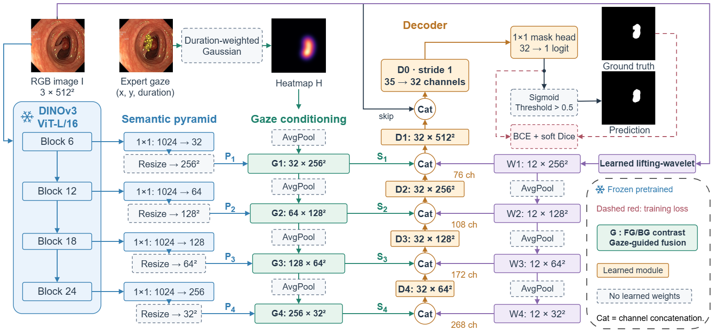
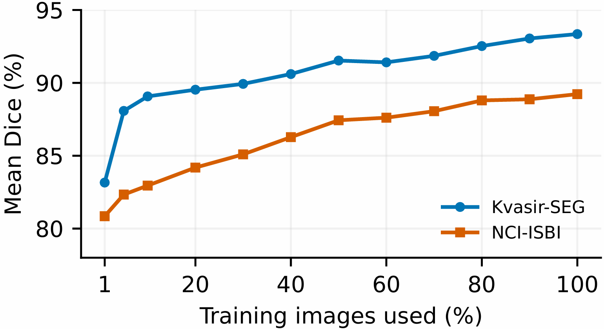
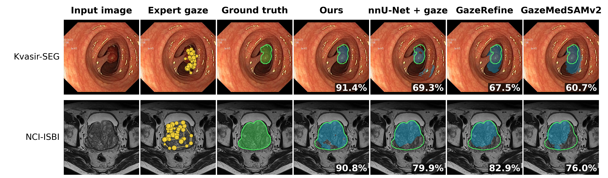

GazeLIFT
Gaze-Guided Few-Shot Adaptation
for Medical Image Segmentation
1 L2TI, Institut Galilée, Université Sorbonne Paris Nord, France
2 Northwestern University, USA
Expert gaze tells us where to look. GazeLIFT combines that spatial guidance with frozen visual features and a compact decoder to delineate the target.
Main configuration, seed 42. Parameter count excludes the frozen DINOv3 encoder, which is required at inference.
01 / APPROACH
From fixations to precise masks
GazeLIFT adapts multi-depth DINOv3 representations using duration-weighted gaze and foreground–background prototype contrast. A learnable lifting-wavelet branch preserves local image structure, while a compact decoder combines semantic, gaze and image information.
GazeLIFT architecture

Encode semantics
Frozen DINOv3 features are extracted at blocks 6, 12, 18 and 24.
Condition on gaze
Fixation locations and durations form heatmaps that guide prototype contrast and feature adaptation.
Recover boundaries
Wavelet features and RGB information complement the semantic features in the segmentation decoder.
02 / EVIDENCE
Accuracy and training-run variability
Across seeds 40–54, GazeLIFT improves the mean test Dice over the without-gaze configuration on both datasets. Values below report mean ± SD across training runs; confidence intervals describe the estimated run-level mean.
| Dataset | Without gaze | GazeLIFT | Paired gain (95% CI), pp |
|---|---|---|---|
| Kvasir-SEG | 90.28 ± 0.54 95% CI [90.03, 90.56] | 93.22 ± 0.44 95% CI [93.00, 93.43] | +2.94 [2.69, 3.18] |
| NCI-ISBI | 84.25 ± 0.88 95% CI [83.81, 84.67] | 87.94 ± 0.79 95% CI [87.54, 88.31] | +3.70 [3.11, 4.29] |
Test sets: 100 Kvasir-SEG images and 117 NCI-ISBI slices. These intervals quantify training-run variability on fixed test sets; they do not establish performance on new clinical populations. Paired gains use unrounded run scores.
Selected mean Dice (%) from the main comparison. External methods may use different protocols; this table provides context rather than a fully controlled ranking.
| Method | Kvasir-SEG | NCI-ISBI |
|---|---|---|
| GazeMedSAMv2 | 85.19 | 85.62 |
| GazeRefine | 88.10 | 80.28 |
| nnU-Net + gaze | 90.59 | 88.15 |
| GazeLIFT | 93.35 | 89.24 |
03 / ANNOTATION EFFICIENCY
Adaptation with few training masks
In the separate fixed-update experiment, nine Kvasir-SEG training masks yield 83.16% Dice and six NCI-ISBI training masks yield 80.85%. The six prostate slices span six patients. Fixed validation sets contain an additional 90 images and 73 slices, respectively.
Training-fraction experiment

04 / QUALITATIVE ANALYSIS
Target coverage and boundary alignment
One illustrative test case per dataset

In the displayed polyp case, GazeLIFT follows the target contour while comparator predictions include additional regions. In the prostate case, GazeLIFT covers more of the annotated gland, while comparator predictions leave larger parts uncovered. These illustrative cases complement the cohort-level results.
05 / OPEN RESEARCH
Code and trained-model demo
Interactive segmentation
Upload an image, add fixation points or import gaze records, and run the dataset-specific trained adapter.
Demo information ↗Source and results
Documented model source, protocol notes and reported result tables.
Explore GitHub ↗Model availability
The demo is prepared for the trained Kvasir-SEG and NCI-ISBI adapters. Weight verification and deployment are pending; no inference output is generated without a verified checkpoint.